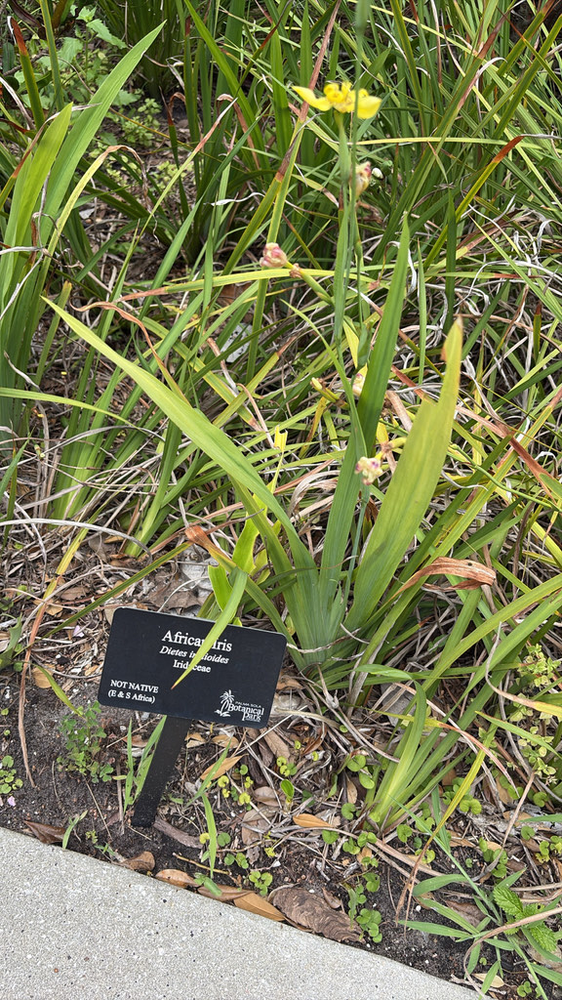

- The flower lasts only a single morning — each bloom opens at dawn and is gone by noon. The plant compensates by producing them in succession over a long season.
- After flowering, the stem tip bends to the ground, roots where it touches, and starts a new plant. This is the walk — slow, lateral, relentless.
- Member of the iris family. The whole Iridaceae family should be kept away from dogs — the rhizomes in particular contain compounds that cause digestive upset.
- Forms spreading clumps over time. Tolerates a surprising range of conditions including waterlogged soil and drought once established.
- For years this plant was mislabeled African iris around the park — but the two are genuinely different. The real African iris grows by the pond on Welcome Island, a short walk away, if you'd like to compare them side by side.
Non-native. Native to southern Mexico, Central America, Colombia, and Venezuela. Member of Iridaceae — the iris family.
- The yellow walking iris earns its name through a simple mechanism: after the flower stalk finishes blooming, the tip arches down to the ground. Wherever it makes contact, it roots and produces a new plant. One plantlet at a time, the clump travels laterally across a bed.
- The flowers themselves are short-lived by design. Each bloom opens in the morning and closes permanently by midday — a single morning per flower, with new ones following in succession. The effect across a clump in bloom is a daily rotation of fresh flowers.
- For a long stretch this plant was labeled African iris around the park, and the mix-up is understandable — both grow the same fan of sword-shaped leaves. But they are different plants. If you want to see for yourself, the park's African iris grows by the pond on Welcome Island, a short walk from here; side by side, the flowers and habit give them away.
- Like true irises, this plant carries irritant compounds — historically called irisin, concentrated in the rhizomes — that cause digestive upset in dogs and cats. ASPCA flags irises as toxic, and the walking iris shares the same chemistry, so it is worth keeping curious pets from digging at the roots.
Morning blooms attract bees and other native pollinators during the brief window they are open. The clumping foliage provides low ground cover.
Limited direct wildlife value, but the walking habit makes it useful as a spreading groundcover in moist areas — including pond bank edges where it fills gaps and contributes to bank stabilization over time.
Bright yellow with brown spots, iris-shaped, appearing on arching stems above the foliage. Each flower opens at dawn and closes by midday — one morning per bloom. New flowers follow in succession.
After flowering, the stem tip arches to the ground and roots on contact, producing a new plantlet. This is the walking mechanism. Clumps expand steadily outward over time.
Long, narrow, sword-shaped, in a fan arrangement typical of the iris family. Medium green.
Clumping, 2 to 4 feet tall. Spreads slowly but persistently by the walking stem-tip rooting.
The iris-shaped yellow flowers with brown spots are distinctive. In the morning they are open; by noon they are closed. Look for arching stem tips touching the ground at the edge of established clumps — those are the next generation taking root.
Don't eat this plant — the iris family carries irisin in the rhizomes, which irritates the digestive tract if swallowed. It's a mild rather than serious risk.
The ASPCA lists irises as toxic to dogs and cats; the same irritants, concentrated in the rhizomes, can cause drooling, vomiting, and lethargy. Keep pets from digging up the roots.

- © Randall Carter (CC-BY-NC), via iNaturalist